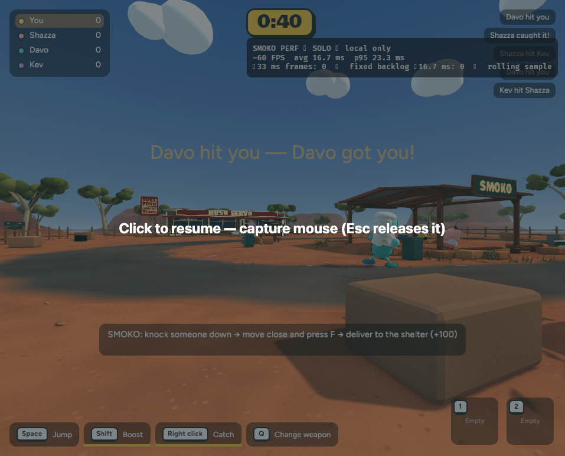

Smoko browser performance profile
This optional panel gathers each browser's frame-pacing readings locally. It only runs during Smoko gameplay and sends no measurements to other players.
Actual browser capture
Live Bush Servo scene with the profiler enabled. This capture was taken after releasing mouse capture at the click-to-resume overlay.

At capture: 60 FPS, 16.7 ms average, 23.3 ms p95, zero frames at/above 33 ms and zero fixed-step backlog samples at/above 16.7 ms. Because gameplay was paused at the overlay, this is a frame-loop/UI check, not an active-play performance baseline.
Reading the panel
- Approximate FPS and average/p95 frame interval describe the local browser game loop.
- 33 ms frames count long stalls in the rolling five-second window.
- Fixed backlog counts render samples where the simulation had at least 16.7 ms waiting in its fixed-step accumulator.
- HOST, GUEST or SOLO identifies the local peer. No measurements are sent to another player.
Test online
- Open Australian BBQ with the profiler enabled.
- Both host and guest open the same opt-in URL, refresh, and start a fresh Smoko yard.
- Keep each game tab visible and pointer capture active. After five seconds, note FPS, p95, long-frame count and fixed-backlog count.
- Record separate readings while standing still, walking/carrying, and during a busy fight.
- Compare the host and guest panels. A high p95 on one device suggests local frame pacing; smooth frame readings with rubber-banding suggest movement/network sync. These indicators narrow the cause but do not measure network latency or GPU execution directly.
An earlier solo reading on this Mac was about 75 FPS, 13.3 ms average and 13.9 ms p95. It is not a host/guest comparison.
Current status
The browser timer panic is fixed with performance.now(), and the profiler panel renders above the normal HUD. The corrected WebAssembly build and live Smoko scene were verified in Chrome. The active-play host/guest comparison still needs both players online.
Recovery checkpoint